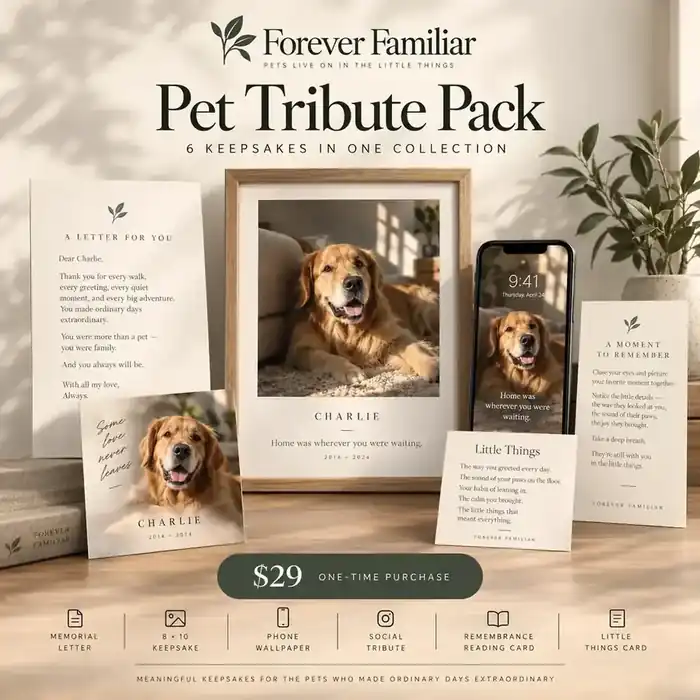
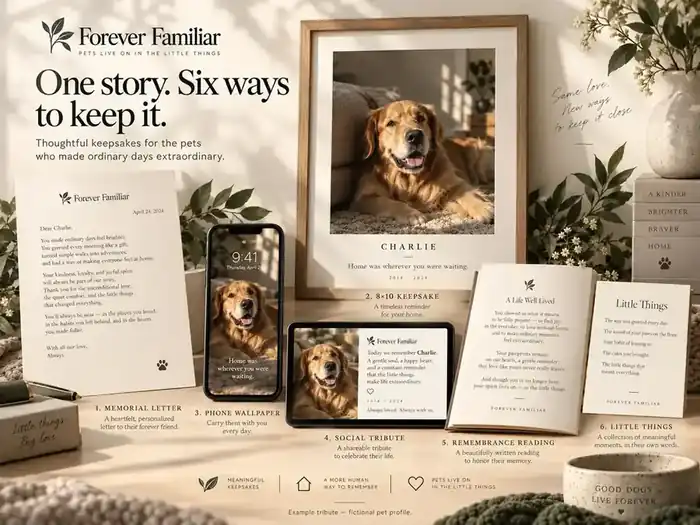
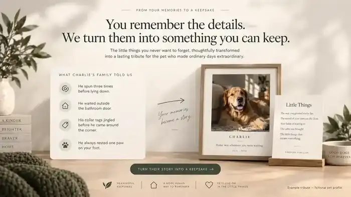
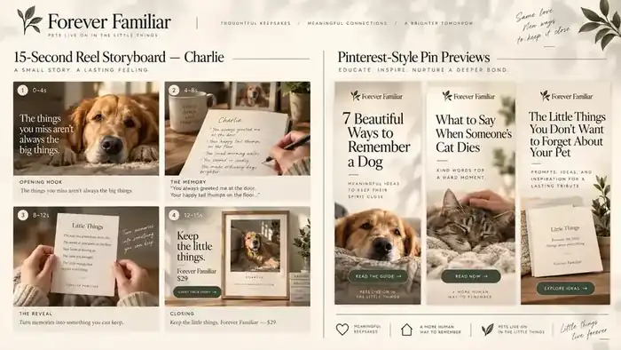
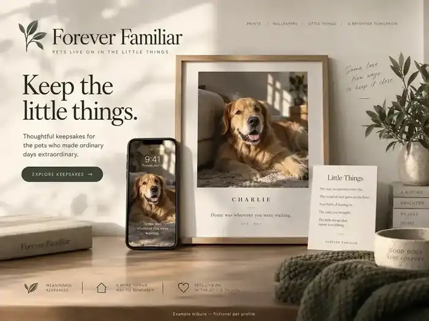
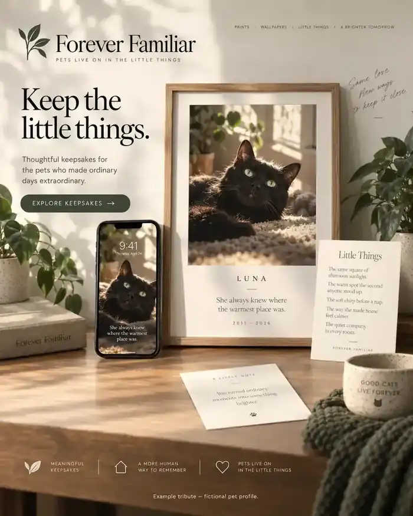
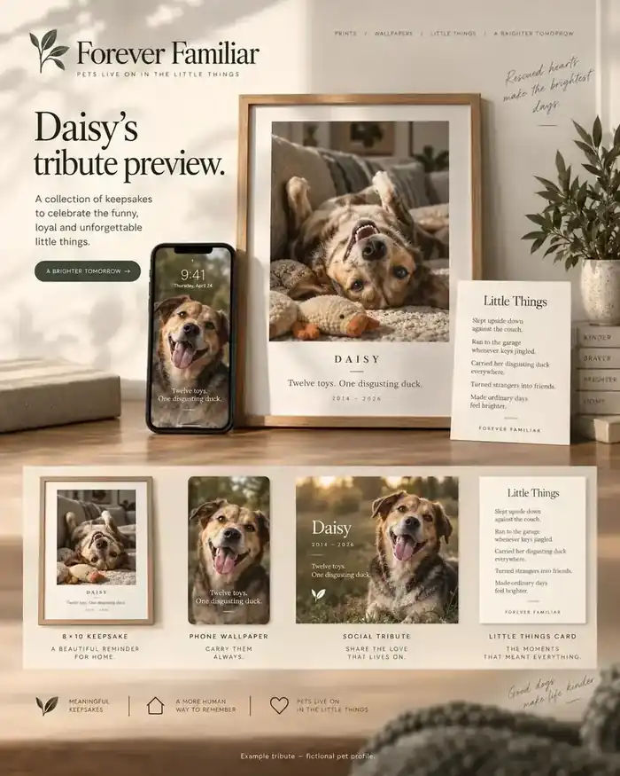
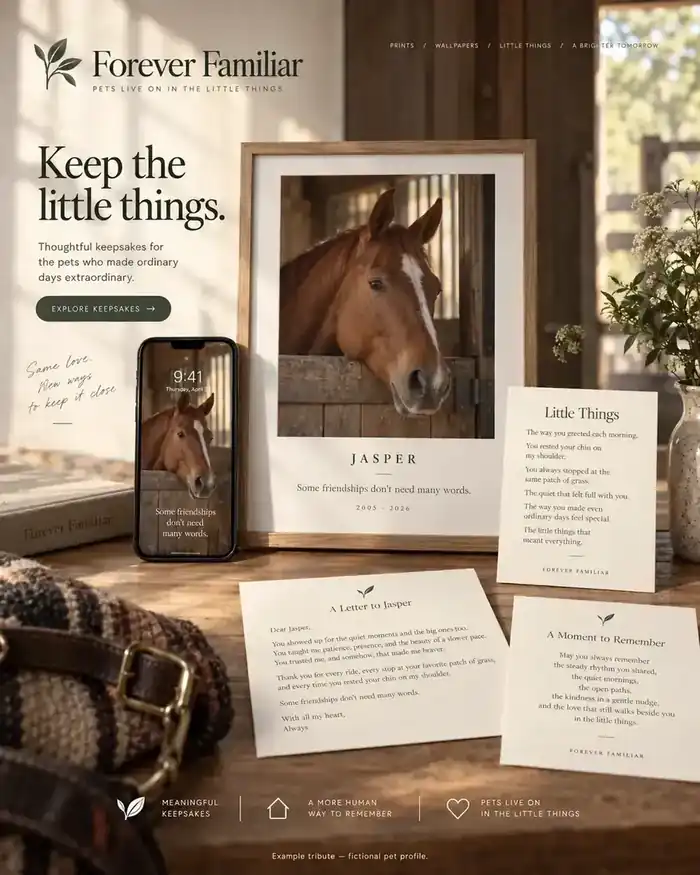
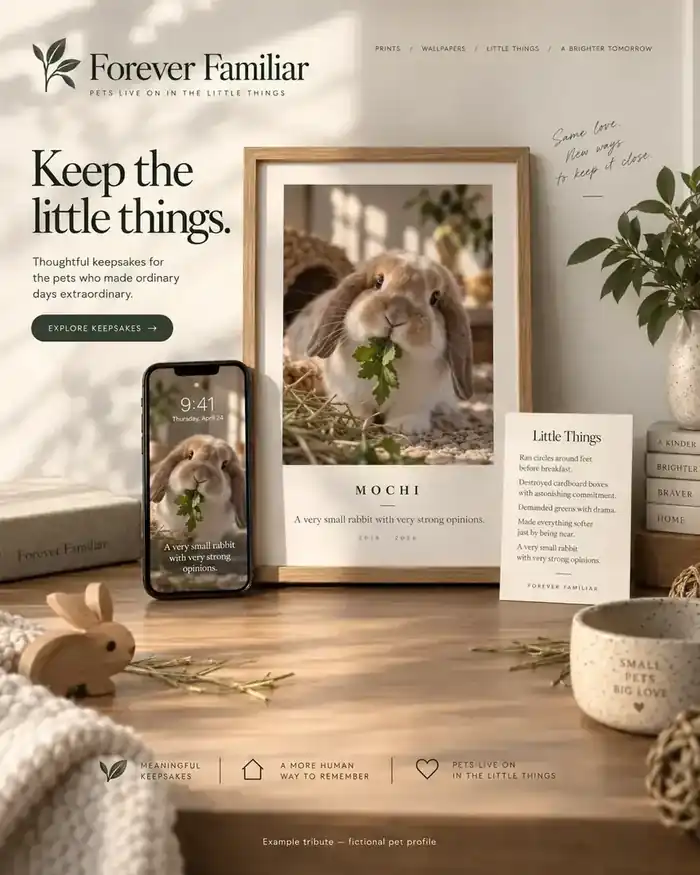
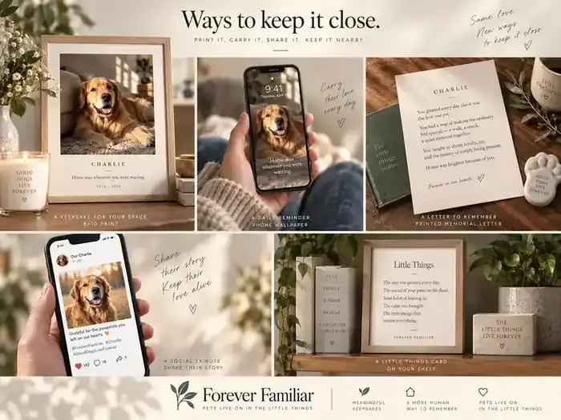

EXAMPLES & MEDIA
See what Forever Familiar actually creates.
Every example below is a fictional profile built to show the product clearly. You can now enter your own pet’s photo and story before paying, then unlock the finished six-piece pack only when you are ready.
THE PRODUCT
One story. Six ways to keep it.

Complete tribute presentation
Framed keepsake, phone wallpaper, Little Things piece and the core visual language.

The six-piece pack
Memorial letter, 8×10 keepsake, phone wallpaper, social tribute, remembrance reading and Little Things card.
INPUT → OUTPUT
The memories are the raw material.

What the family remembers
Specific habits, sounds, routines and tiny details become the emotional center of the tribute.

What the product becomes
A finished set that looks cohesive enough to keep, print or share without feeling like a template.
FIVE FICTIONAL EXAMPLES
Different animals. Different little things.

Charlie
Golden Retriever · “Home was wherever you were waiting.”

Luna
Black cat · “She always knew where the warmest place was.”

Daisy
Rescue mix · “Twelve toys. One disgusting duck.”

Jasper
Chestnut horse · “Some friendships don’t need many words.”

Mochi
Holland Lop rabbit · “A very small rabbit with very strong opinions.”

Ways to keep it close
Print it, carry it, share it, or simply keep it nearby.
15-SECOND DEMO
From a remembered detail to a finished keepsake.
SHAREABLE CONTENT
Creative assets built for discovery.
These are the current Pinterest-style launch creatives. They lead people to useful pet-loss resources rather than asking for a purchase immediately.
PARTNER RESOURCE
Something veterinary and aftercare teams can actually show families.
The partner sheet gives clinics, hospice teams, cremation providers and rescues a clean overview of the product without turning a difficult moment into a hard sell.
{kind=link}